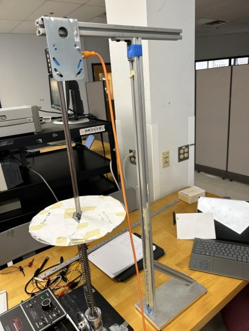
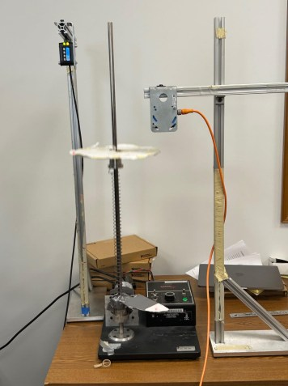
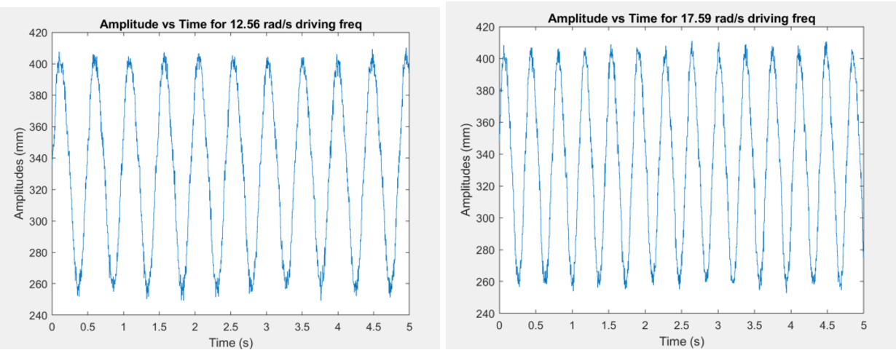
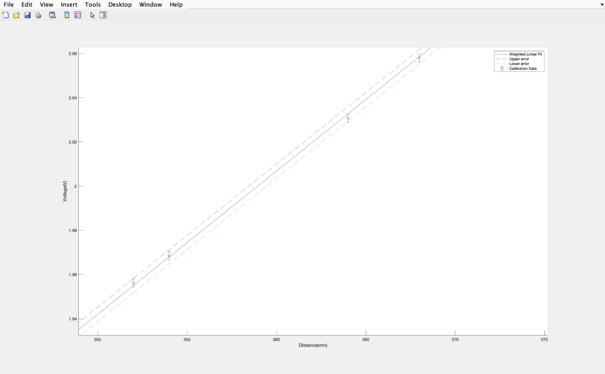
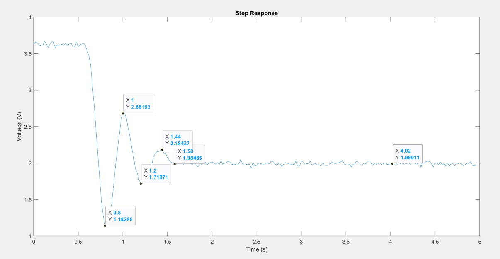
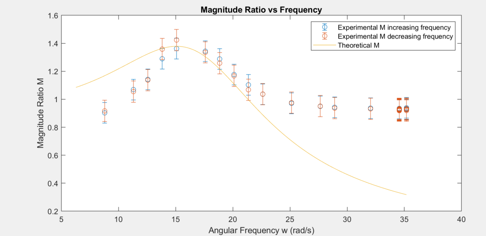
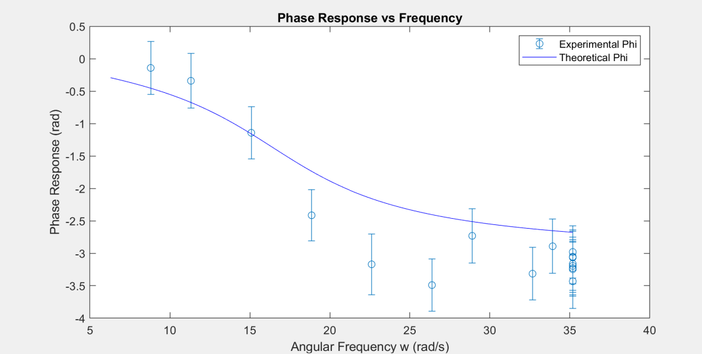
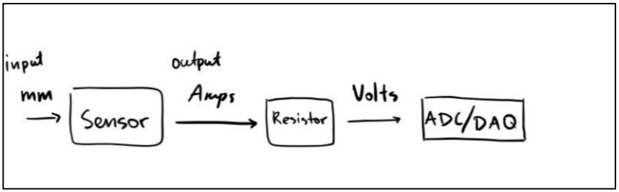

Project Overview

Figure 5: Optical sensor setup showing the mass-spring oscillator with mounted sensor and cantilever beam
Experimental System Design
Hardware Configuration
Optical Transduction System
- Sensor: Sick DT50-P1113 optical proximity sensor
- Range: 200-800 mm operational distance
- Output: 4-20 mA analog current signal
- Conversion: 242Ω resistor for current-to-voltage
- Resolution: ±0.1 mm measurement accuracy
Data Acquisition
- ADC: NI PCI-6221 DAQ board (10-bit resolution)
- Sampling Rate: 500+ Hz (exceeding Nyquist)
- Input Range: ±5V to capture full signal swing
- Processing: MATLAB real-time data logging
- Validation: Oscilloscope monitoring for signal integrity
Mechanical System
- Spring Constant: k = 90.2 ± 0.12 N/m
- Top Mass: m = 0.2864 ± 0.0005 kg
- Natural Frequency: ωₙ = 17.7 ± 0.02 rad/s
- Damping Ratio: ζ = 0.373 ± 0.0018
- Frequency Range: 0-35 rad/s variable drive

Figure 3: Dual sensor configuration showing custom cantilever beam attached to bottom mass for phase measurement
Signal Processing and Noise Elimination
Filter Design Strategy
fₛ = 2 × 5.6 Hz = 11.2 Hz minimum
→ Actual sampling: 500+ Hz (45× safety margin)

Figure 15: Time-dependent position comparison at two driving frequencies, 12.56 rad/s (left) and 17.59 rad/s (right) showing increased amplitude closer to resonance frequency, data shown after calibration but before filtering
Sensor Calibration and Uncertainty
Weighted Linear Regression Calibration
a₁ = 154.548 mm/V (sensitivity)
a₀ = 49.853 V (offset)
| Parameter | Measured Value | Uncertainty | Method |
|---|---|---|---|
| Spring Constant (k) | 90.2 N/m | ±0.12 N/m | Weighted fit (8 data points) |
| Natural Frequency (ωₙ) | 17.7 rad/s | ±0.02 rad/s | Step response analysis |
| Damping Ratio (ζ) | 0.373 | ±0.0018 | Envelope decay method |
| Damping Coefficient (c) | 4.03 Ns/m | ±0.018 Ns/m | Propagated from ζ, k, m |
| Top Mass (m) | 0.2864 kg | ±0.0005 kg | Digital scale (0.1g resolution) |

Figure 7: Weighted calibration fit showing linear relationship between sensor voltage and measured distance
Experimental Methodology
Step Response Testing
To determine natural frequency and damping ratio experimentally, we performed step input tests. The top mass was pulled down and released, allowing free oscillation until reaching steady state.
Analysis: Using the envelope decay method, we extracted the damped natural frequency from the oscillation period and the damping ratio from the exponential decay rate of the amplitude envelope.
Frequency Sweep Testing
To map the full frequency response, we varied the motor power from 20-100 (arbitrary units) in increments, measuring system response at each frequency. Near resonance, we took finer steps to precisely locate the peak.
Validation: Data was collected both increasing and decreasing power to check for hysteresis effects in the system response.

Figure 9: Step response showing exponential decay envelope of free oscillation used for damping analysis
Phase Lag Measurement
Results and Validation
Magnitude Ratio (Amplitude Response)
where X = (Peak_high - Peak_low)/2 from filtered data

Figure 16: Magnitude ratio comparison showing close agreement between experimental measurements (both increasing and decreasing frequency) and theoretical predictions, with clear resonance peak around 15 rad/s
Phase Response
measured from time difference between top and bottom mass peaks

Figure 17: Phase lag comparison showing characteristic second-order behavior with close agreement at low frequencies and divergence at high frequencies due to cantilever beam resonance effects
Technical Challenges
Challenge: Electromagnetic Interference
Motor operation and ground loops created electrical noise in the sensor signal, particularly at harmonics of the motor frequency.
Solution: 6th-order Butterworth low-pass filter with 15 Hz cutoff effectively eliminated high-frequency noise while preserving signal content (0-5.6 Hz). Signal-to-noise ratio improved by two orders of magnitude.
Challenge: Phase Measurement Accessibility
Top mass disk blocked direct optical access to bottom mass, making simultaneous measurement of both masses impossible with fixed sensor positions.
Solution: Custom cantilever beam (pencils + cardboard) attached to bottom mass, extending beyond top disk. Second optical sensor tracked beam motion. Worked well at low frequencies; noted beam resonance effects at high frequencies.
Challenge: Signal Clipping Risk
Sensor output range (from 4 to 20 mA) needed to fit within ADC input range (±5V) without clipping at extreme positions.
Solution: Carefully calculated resistor value (242Ω from two 121Ω in series) to map sensor range to safe voltage window. Verified with multimeter before data collection. Monitored oscilloscope throughout testing to catch any signal integrity issues.
Challenge: Resonance Peak Localization
Initial coarse frequency steps missed the exact resonance peak, leading to uncertainty in maximum amplitude measurement.
Solution: Two-pass methodology: broad sweep to locate approximate resonance, then fine steps (smaller power increments) near the peak. Collected data both increasing and decreasing to check for hysteresis.
Equipment and Instrumentation
| Instrument | Model/Specifications | Purpose |
|---|---|---|
| Optical Sensor | SICK DT50-P1113 (200-800mm, 4-20mA) | Non-contact displacement measurement |
| DAQ Board | National Instruments PCI-6221 (10-bit) | Analog-to-digital conversion and logging |
| Oscilloscope | BK Precision 2190E (800×480) | Real-time signal validation |
| Multimeter | Keysight 34461A (10μV-100mV resolution) | Resistor verification & voltage checks |
| Digital Scale | Triomph TRKS09 (0.1oz/1g resolution) | Mass measurement for calibration |
| Caliper | Tack Life DC01 (0.1mm resolution) | Displacement measurement |
| Stroboscope | Extech 461830 (100-10000 FPM/RPM) | Driving frequency verification |
| DC Gearmotor | Bison 26-999-2004-027 | Variable frequency oscillation driver |

Figure 4: Signal flow from optical sensor through resistor conversion to ADC/DAQ for data acquisition
Outcomes and Future Work
What I Built
- Characterized a second-order oscillatory system with 1.5% deviation from theoretical predictions across the full frequency range
- Designed a non-invasive optical measurement system that eliminates the mass-loading effects inherent in contact sensors
- Built a signal processing pipeline (6th-order Butterworth filter) that isolated clean displacement data from a noisy electrical environment
- Validated theoretical models for magnitude ratio and phase response through experimental measurement and uncertainty analysis
- Applied weighted linear regression for sensor calibration and error propagation for uncertainty quantification
Acknowledged Limitations
- Cantilever beam resonance: The improvised bottom mass tracking solution introduced phase measurement errors at high frequencies when the beam reached its own resonant mode
- Friction and nonlinearity: The collar-to-rod interface had measurable friction not accounted for in the ideal second-order model, contributing to small deviations
- Paper surface vibration: At high frequencies, the paper target on the top disk vibrated independently, affecting magnitude ratio measurements above resonance
Recommended Improvements
- Rigid phase measurement fixture: Machine a metal cantilever arm with high stiffness (resonant frequency >100 Hz) to eliminate beam-induced phase errors
- Lubrication: Reduce collar friction through proper lubrication or air bearing design, bringing the system closer to ideal second-order behavior
- Nonlinear system identification: Apply advanced techniques like extended Kalman filtering or nonlinear least squares to better model the actual system dynamics including friction
- Multi-sensor fusion: Combine optical displacement with accelerometer data to cross-validate measurements and improve confidence bounds